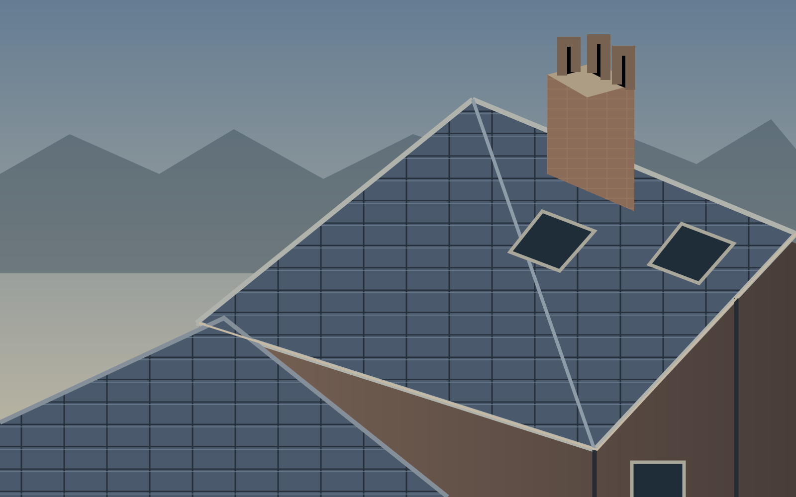

VERSATILE / TRADITIONAL
Concrete & Clay Tiles
A familiar finish, with colour and character to make it your own.
25–50 year indicative lifespan
LONDON & THE SOUTH EAST / ESTABLISHED CRAFT
Above every great home is a roof built right.
From a single slate to a complete transformation.
*Brief-supplied concept figures. No verified certification, warranty or response guarantee.
01 / WHAT WE DO
One roof. Every detail considered.
Sample starting prices, subject to a real survey.
02 / CHOOSE WHAT LASTS
VERSATILE / TRADITIONAL
A familiar finish, with colour and character to make it your own.
25–50 year indicative lifespanSEAMLESS / CONTEMPORARY
A clean fibreglass finish for extensions, garages and bay windows.
25-year concept warranty*NATURAL / ENDURING
Quiet distinction for period homes and prestige properties.
100yr+ indicative lifespanLifespan depends on installation, maintenance and conditions. Warranty terms are illustrative, not offered by this demo.
CONCEPT CREDENTIALS · UNVERIFIED
*Brief references only. This page represents no accredited or insured contractor.
03 / A CLEAR WAY FORWARD
A proposed property visit and honest assessment. Start by preparing your project brief below.
Materials, scope and costs in plain English. The brief's 24-hour turnaround is a concept target.
A considered plan for the work. Real scheduling and warranty terms require a verified contractor.
URGENT ROOFING / CONCEPT SERVICE
Leaks and active water ingress need real professional attention. This demonstration cannot dispatch a roofer or promise a response time.
0800 123 4567
Illustrative number · 8am–8pm Mon–Sat concept hours
This is not a monitored contact route. For immediate danger, contact your local emergency services. Arrange inspection through a verified roofing professional; this demo cannot assess structural safety.
“Summit re-roofed our Victorian terrace and the finish is exceptional. Tidy, professional, and on time.”
DAVID K., WIMBLEDON · ILLUSTRATIVE TESTIMONIAL
START WITH A CLEARER PICTURE
Prepare a local project brief. A real appointment requires a real contractor.
London · Surrey · Kent · Sussex · Essex · Hertfordshire